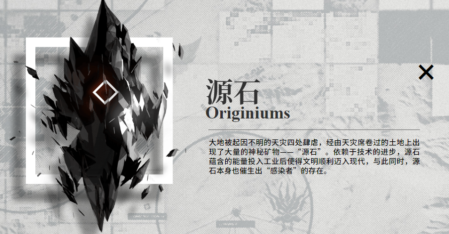
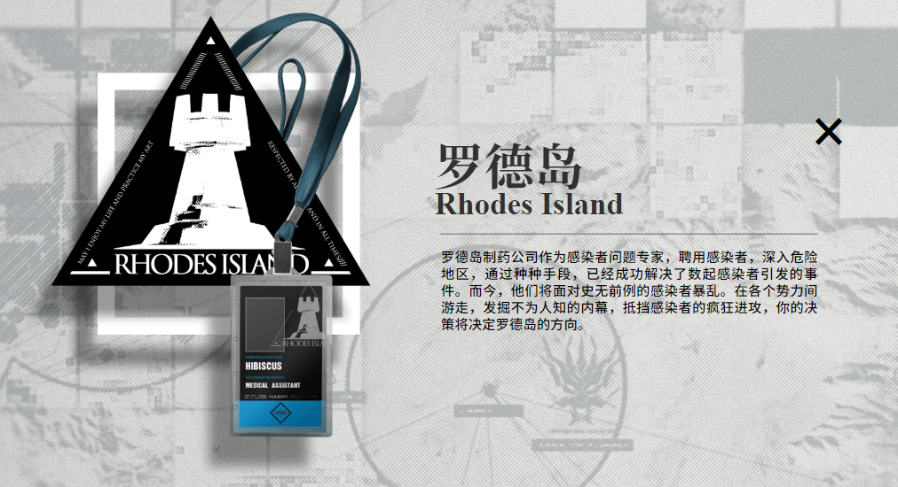
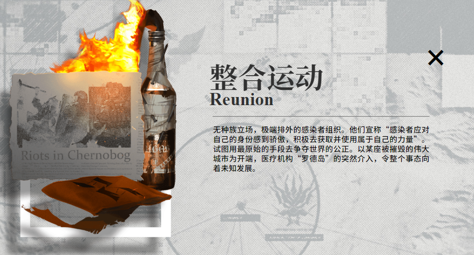

明日方舟介绍
# 背景设定
# 源石
泰拉世界普遍存在一种矿物， 大部分呈黑色半透光晶体。源石都蕴藏着巨大的能量， 是引发天灾的首要因素。通常被运用于法术领域，是制造各种施术工具和法术道具的基本材料和催化物，离开了源石辅助，法术的使用效率会大幅下降。现在，随着源石引擎技术的革新，越来越多的源石被各个国家作为能源使用。 
# 天灾
在泰拉世界频繁发生的各种自然灾害的统称。包含且不限于暴风、雪灾、强降雨、洪水等甚至陨石坠落。天灾的发生频率非常高，规律也难以捉摸，导致大部分的文明通过全城市迁徙来躲避天灾。天灾过后往往会留下一种叫做源石的矿物。研究表明，天灾其实反而可能是源石的一种传播媒介。
# 矿石病
目前发现长期接触源石及其工业衍生品，会使人更容易得一种被称为“矿石病”的不治之症。患上矿石病的人被称为“感染者”。矿石病会以一种危险的形式增强人的法术使用能力，但是却会在患者使用法术的过程中不断扩大感染矿石病范围最终夺走感染者的生命并以其作为新的感染源。有关该病症已经有多方面的长期研究，然而并没有太多有效成果。
# 罗德岛 RHODES ISLAND
罗德岛制药公司是一家注册医药研发公司。 罗德岛在公开的资料中声称正在研究可以应用于各个国家、组织或个人遭遇的感染者问题的医疗方案,因此在各国范围内广招贤士，不管资历，无论感染。同时，罗德岛也为其雇员提供良好的医疗与生活条件以及最先进的研究设备，这吸引了许多走投无路的感染者和立志改变感染者处境的有能人士。 
# 整合运动
起因不明并四处肆虐的天灾，席卷过的土地上出现了大量的神秘矿物——被人们称为“源石”。虽然源石的发现历史已久，但是依赖于技术的进步，其蕴含的能量使得文明顺利迈入现代，但与此同时，源石本身也催生出“感染者”的存在。这些身俱力量与不幸的存在，如今他们中的一部分，妄图与源石整合为一，为大地带来新的秩序。这场战火阴谋使对抗天灾遇到的新的阻碍。 
# 角色设定
# 近卫
近卫干员是近战攻击为主的输出职业，他们负责阻挡靠近的威胁并及时将其清除。通常近卫的属性较为全面，可以较好地应对大部分的敌人。近卫干员分为远程近卫、近程近卫、法术近卫等。远程近卫有银灰、拉普兰德等；近程干员有玫兰莎、陈、煌等；法术近卫有慕斯、星极等干员。
# 先锋
先锋干员通常是最优先安排进入战场的单位，他们对后续部署有更很好的帮助。如推进之王、德克萨斯等干员。
# 重装
重装干员是最为坚韧的作战人员，他们自身的高生命力与高防御力使得他们能完成在作战的最前线对敌方单位进行阻挡。优秀的重装干员可以阻挡数个敌方单位。不过要注意的是防御力与生存能力强大是以牺牲对敌伤害为前提的，因此需要尽快配合其他干员消灭当前的敌人。如星熊、蛇屠箱等干员。
# 医疗
医疗干员是整个团队的核心，他们帮助在前线遭受攻击的其他干员并治疗其伤势。医疗干员通常较为脆弱，需要将他们妥善保护。配合重装干员，他们将成为防御阵线不被击溃的保证。如白面鸮、赫默等干员。
# 术师
术师是负责远程法术攻击的重要单位，通常他们以法术形式去精确攻击敌人。在对付高防御的敌人时会有更加好的效果，但术师干员本身也较为脆弱。如远山、阿米娅等干员。
# 狙击
狙击干员是擅长远程物理攻击的作战人员，他们负责在有利地形上帮助团队及时消灭靠近的敌方人员。通常他们拥有更大的攻击范围与破坏能力。狙击干员与术师一样相对较为脆弱，需要小心部署他们。如能天使、陨星等干员。
# 辅助
辅助干员帮助范围内的作战人员强化他们的能力，或削弱敌方单位的能力。虽然本质上并不具有出色的治疗或攻击效果，但是随着参战的时间越长、人员越多，他们的加入将会引起质变。如初雪、真理等干员。
# 特种
特种干员是一批以自身独特技巧参与作战的干员。他们彼此之间的能力差距也会比较大，但是一旦将他们发挥在适当的地方，可能将会有扭转战局的效果。如红、砾等干员。
# 游戏BOSS
# 弑君者
本名柳德米拉。被阻挡时可快速移动至干员身后，技能移动瞬间有无敌判定，有冷却时间。
# 碎骨
未被阻挡时会发射榴弹，击中目标及其周围单位的防御力会在短时间内大幅下降；生命值降至一半以下时攻击力大幅提升。
# W
会使用爆炸物，能对我方单位造成大量物理伤害；生命值降至一半以下时炸药包的使用数量增加。
# 霜星
本名叶莲娜。使用冰环法术，能对周围的我方单位造成大量法术伤害，并在数秒内降低被击中单位的攻击速度；会使用法术冻结地面，使其永久无法被部署干员。
# “冬痕”霜星
普通攻击和冰环均能造成法术伤害，且对目标施加“寒冷”效果；冰环法术对被冻结的目标伤害加倍；第二形态下会有一段无敌时间，且攻击和技能威力更强大。
# 梅菲斯特
全场敌方单位自然生命恢复速度加倍；普通攻击能同时治疗3名敌方单位。
# 浮士德
无法被阻挡且上场一段时间内无敌；会释放双倍攻击力的特殊弩箭；每隔一段时间会召唤战场中隐藏的弩炮台。
# “庞贝”
同时攻击四个目标；击中目标时造成灼烧效果，使其持续损失生命值；被阻挡时会进行自爆造成高额伤害；生命值降至一半时攻击速度大幅提升。
# 萨卡兹百夫长
同时攻击两个目标。
# 鼠王
本名林舸瑞。护盾存在时极大幅度提升防御力；对场上生命上限最高单位释放唱沙，造成大量物理伤害；对场上生命上限最低单位释放沙狱，大幅降低攻击力且持续造成法术伤害。
# 大鲍勃
拥有较高的耐久与攻击力。
# 大亚当
拥有极高的耐久与攻击力。
# 爱国者
本名博卓卡斯替。大幅强化敌军攻击与防御力；行军姿态使自身极容易受到我方攻击；毁灭姿态远程攻击，免疫眩晕，持续对周围造成真实伤害，对最远的高台单位投掷长枪造成物理伤害。